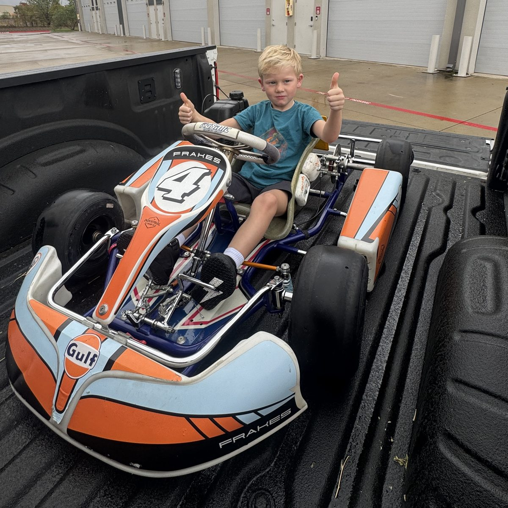

Whitton
Your Kid Kart Honda, before and after every lap.
That orange plate with the black X is what rookies run at NTK. It comes off after 3 race days (the orange stays the rest of the year).
The numbers to remember
First time at NTK? Do these first
Pack the trailer
Check everything off the night before. If it isn't on the trailer, it isn't at the track.
Whitton's driving gear has its own page, with what NTK requires. Check the gear page.
Gear that passes tech
NTK inspects driver gear and can turn it away (Rule 103.1). If a piece doesn't meet the rule, Whitton doesn't drive, so check the labels before you buy. Kart shops sell gear that passes; general sporting goods and motocross stores often don't.
Required every time he's on track, practice days included: helmet, neck brace, rib protector, suit (or jacket and long pants), gloves and enclosed shoes.
-
Helmet Required
Full-face helmet with a face shield (visor). A Snell certification sticker inside the helmet, or a current FIA or FIM certification. For kids his age, the Snell-FIA CMR2016 youth helmets are lighter on a small neck; Snell K and SA rated helmets also qualify.
Rejected: DOT-only street helmets, open-face helmets, motocross helmets with goggles instead of a shield, bike or skate helmets, and anything cracked or dropped hard.
Fit it snug with no rocking, and check the sticker before you pay. If you're unsure about a particular helmet, show it to the Tech Inspector before buying.
Rule 103.1: Snell certified per IKF rules, or current FIA or FIM -
Neck brace Required
A karting neck collar or brace. It's only optional for Senior drivers, so Whitton needs one.
A travel pillow or rolled towel is not a neck brace.
Rule 103.1: approved functional neck brace -
Rib protector Required under 13
Look for an SFI 20.1 label on the vest itself. Buy it in a youth size from a kart shop.
Rejected: protectors with no SFI 20.1 label, including cheap foam vests and sports chest guards.
Rule 103.1: SFI spec 20.1, all racers under 13 -
Driving suit Required
A karting suit, or a jacket plus long pants made of abrasion-resistant material such as leather or heavy vinyl. A one-piece kart suit is the easy choice.
Rejected: nylon wind suits, sweatpants, track suits and regular clothes.
Rule 103.1 -
Gloves Required
Full-finger karting gloves that fit snug so he can grip the wheel.
Skip fingerless or loose winter gloves.
Rule 103.1 -
Shoes Required
Enclosed shoes. Karting boots with thin soles help him feel the pedals and cover the ankles.
No sandals, Crocs or open shoes.
Rule 103.1 -
Undershirt Recommended
A thin, fitted shirt under the rib protector keeps it from rubbing and keeps him cooler in the suit.
Hand-me-down gear? Check that the helmet sticker is there and the shell isn't damaged, and that the rib protector label still reads SFI 20.1. Helmets that took a hard hit should be replaced even if they look fine.
Before he drives
Do this walk-around before every session, not just the first one of the day. Kart on the stand, engine off.
If the brake pedal is soft, the steering binds, or fuel is leaking, he doesn't go out. Fix it or ask someone in the pits to look first.
After he drives
The quick list happens after every session. The full clean happens once at the end of the day, and it's where you catch problems before next time.
How a race day goes
NTK day races follow this order. Night and morning races shift the times, so check the event page.
- Arrive before the sun.Parking spots, unloading and pre-tech all take longer than you think. Come with new race tires already mounted.
- Register (opens 9:00am).You must be registered before going on track. Registration closes an hour before racing. Late registration adds fees and starts him at the back of the final.
- Safety tech.Rookies report to the Race Director for safety tech before the drivers' meeting. The kart needs a current NTK safety tech tag. Have your fire extinguisher ready to show.
- Controlled practice (10:00am).Transponder on the kart. The last practice ("happy hour") sets the order for qualifying. Weigh after happy hour.
- Drivers' meeting (12:30pm).Whitton must be there with an adult. Missing it or goofing off costs a grid spot in the final.
- Qualifying.A 5-minute session. As many laps as he can until the checkered flag, then straight to the scales.
- Pre-final.8 laps, lined up by qualifying. As a rookie he starts behind the non-rookies.
- Final.12 laps for Kid Karts with a rolling start. Results decide the trophies. Kid Karts outside the top 3 get a participation medal.
After every session: scales. Kart plus Whitton in full gear must weigh at least 160 lb. Don't add anything between the finish line and the scale. If he's light, add bolt-on lead to the seat before the next session.
Setup baseline
Start here and only change one thing at a time. Write down what you changed and whether it helped.
Kart and engine specs
| Tire pressure, practice | 14 psi coldStarting point |
|---|---|
| Tire pressure, race day | About 19 psi on narrow tiresRule max is 30 psi after the race (Rule 302) |
| Tires | Evinco, 4.60-5 max front and rear, rear circumference 33¾″ maxRule 202.1, 302 |
| Engine oil | SAE 10W-30, about 0.25 L (8.5 fl oz). Fill to the edge of the filler neck with the kart level.Honda GXH50 spec |
| Fuel | 87 octane, ethanol free. On race days it must come from Buc-ee's in Denton, pumps 241 or 242.Rule 203.1 |
| Spark plug | NGK CR5HSB (or Denso U16FSR-UB), washer stays on. Gap 0.6–0.7 mm (0.024–0.028″).Rule 302, Honda spec |
| Main jet | #52S. New engines ship with a #55, which is not legal.Rule 302 |
| Gearing | #219 chain, 15-tooth clutch, 89-tooth axle sprocket. Not adjustable in this class.Rule 302 |
| Chain tension | ¼″ to ½″ of play in the middle of the chain |
| Clutch | HPD clutch with red springs. Never oil it.Rule 302 |
| Brake pads | OTK SA3 pads. Run the Honda a little loose for less bite. |
| Wheel nuts | 10 mm socket. Front wheels have spacers. |
| Minimum weight | 160 lb, kart plus driver in full gearRule 302 |
Why the tire pressure matters
Lower pressure gives more grip but makes the kart feel heavy and slow on a low-power engine like the Honda. Higher pressure lets the kart roll more freely, which is usually faster for a Kid Kart. That's why practice starts at 14 psi and race day goes up to about 19 psi on narrow tires.
Always set pressure cold, before the session, and check it again right after he comes in. Hot tires read higher. If the hot reading jumps a lot more than usual, something changed.
If the kart is doing this, try that
Won't start or dies right away
- Fuel valve on? Fuel in the tank?
- Kill switch in the run position, and the plug wire pushed all the way on.
- Oil low? The GXH50's oil alert shuts the engine off when it's low. Check it level.
- Pull the plug. Wet and black means flooded or fouled: dry it or swap in a spare.
Bogs or stumbles when he hits the gas
- Check the air filter foam is in and clean.
- Look for exhaust leaks at the port and muffler. Leaks hurt power and can get you disqualified.
- Old or wrong fuel. Drain it and refill with fresh ethanol-free fuel.
- If it keeps happening, the carb needs cleaning or new gaskets.
Chain falls off or makes noise
- Reset tension to ¼–½″ of play and make sure the engine mount bolts are tight.
- Sight down the chain. The clutch and axle sprockets should line up straight.
- Stretched or kinked chain: replace it. Check the sprocket teeth for hooks.
Brakes grab or the rear wheels lock
- Loosen the brake a little so there's less bite (normal for the Honda).
- Check pads for glazing or uneven wear and the rotor for oil. Clean with brake cleaner, never WD-40.
Pedal sticks or doesn't come back
- Check the cable isn't catching in its housing and the return spring is attached.
- Don't send him out until both pedals return on their own every time.
Kart pulls to one side
- Check both front tires have the same pressure.
- Look for a bent tie rod or loose steering bolt. Bent tie rods are common after contact.
Maintenance
Count every day the kart runs, practice or race, as a track day. Tap the button after each one and this page tells you what's coming due.
What's due
These intervals are a starting point for a racing Honda, which is far more often than Honda's lawn-equipment schedule. Adjust as you learn the kart.
NTK rules, made simple
The full rulebook is long. These are the parts that matter for Whitton. If something isn't covered, ask the helper or the Race Director.
The rules that matter most for Whitton
Being a rookie
Orange number plate on the back of the kart, with a black X for his first 3 race days. During those 3 race days he starts at the back of every session. The orange plate stays on the rest of the calendar year. He has to watch the NTK safety video and complete new-driver orientation first. (Rule 104.1)
He has to be able to run a lap in 65 seconds or quicker before his rookie card gets signed. If he can't yet, NTK refunds the entry. (Rule 103.6)
What he has to wear
Driving suit or jacket plus long pants made of abrasion-resistant material, full-face helmet with shield (Snell, FIA or FIM), neck brace, enclosed shoes and gloves, every time he's on track. Rib or chest protector (SFI 20.1) is required for everyone under 13. (Rule 103.1)
Kid Kart Honda engine rules
- Engine must keep its Honda Performance Division (HPD) seal and follow the IKF GXH50 rules.
- #52S main jet. Engines ship with a #55, which has to be swapped.
- #219 chain, 15-tooth clutch, 89-tooth sprocket.
- Stock air filter with the foam insert.
- NGK CR5HSB or Denso U16FSR-UB plug, washer stays on.
- Stock kill switch stays connected. An extra one within his reach is allowed.
- HPD clutch, red springs, no modifications, no oiling.
- Exhaust exactly as supplied. Seal the port and muffler with copper RTV, because a leak can get him disqualified.
(Rule 302)
Kart and chassis
- Current NTK safety tech tag on the chassis, or the kart can't go on track at all. (201.2)
- Chain guard must fully cover the chain from above and behind.
- Side pods (or double nerf bars) and a nose cone are mandatory. Rear bumper must protect the rear tires.
- Numbers on all four sides. (201.4)
- Transponder on the back of the seat, about 25 cm off the ground, vertical. Rookie Kid Karts get one free. (201.6)
- Minimum weight 160 lb with Whitton in full gear. (302)
In the pits
- Only start the kart on a stand with the rear wheels off the ground, or with a driver in it holding the brake. Never on the concrete pit runner. (103.3)
- No long, high-rev runs in the pits.
- You must have a fire extinguisher in your pit. (103.3)
- No bikes, scooters or balls in the pits. Pets on a short leash, never in the grid or tech barn. (103.7)
- On the grid, engines run on the ground only, not on stands. (502.1)
On track
- If the kart stops on the track, stay put and raise both hands once it's fully stopped. Raise one hand when slowing down or pulling off. (103.5)
- Kid Karts use rolling starts, and track volunteers can restart a Kid Kart that stalls. (503.6, 503.7)
- No radios or talking to the driver on race day. (503.2)
- The basic rule is no contact. The kart behind is responsible for not hitting the kart in front. (Attachment B)
The flags
Go over these with Whitton until he can name them all.
Ask the rulebook
Type a question in plain words. Answers come from the 2026 NTK rulebook and the kart notes on this site, with the rule number so you can check it.
The helper can make mistakes. For anything that decides a race result, confirm with the Race Director.
Good to have on hand
Spares and tools that save a race day. Check them off as you buy them.